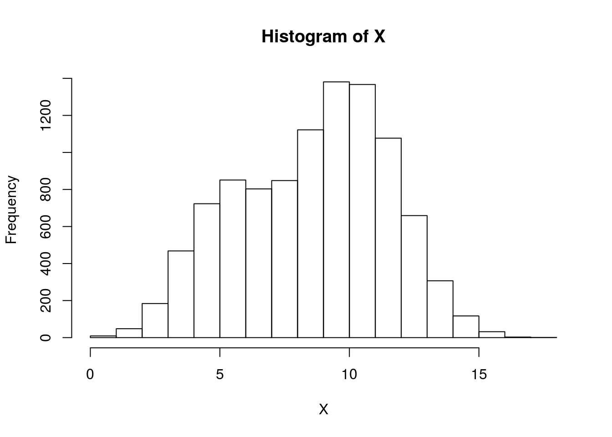
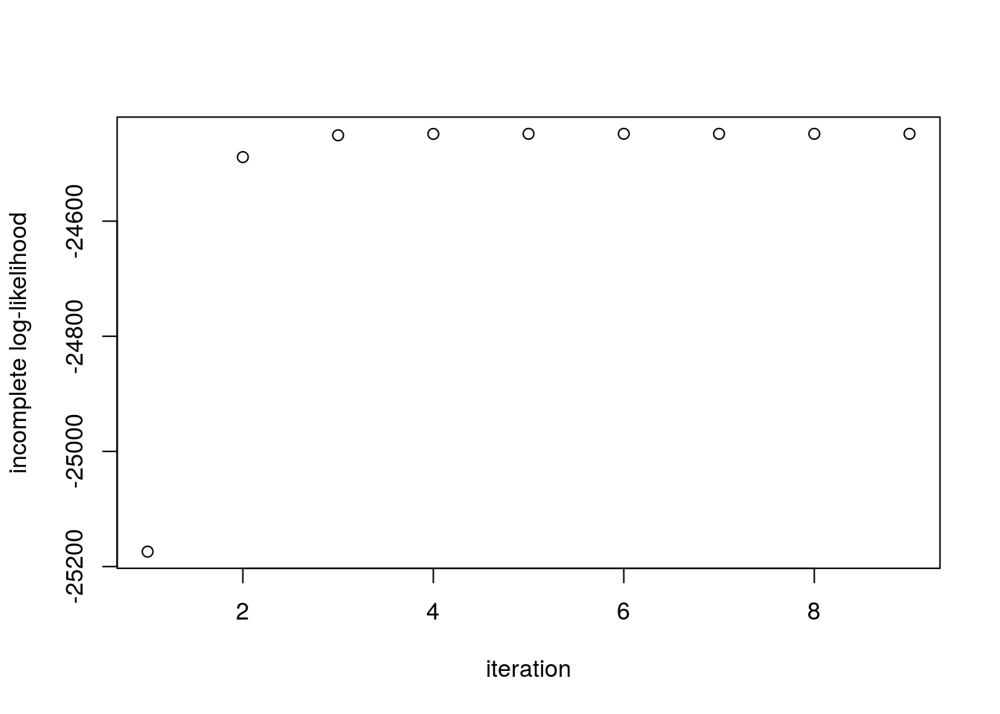

Last updated: 2017-03-06
Code version: c7339fc
This document assumes basic familiarity with mixture models.
In this note we introduced mixture models. Recall that if our observations \(X_i\) come from a mixture model with \(K\) mixture components, the marginal probability distribution of \(X_i\) is of the form: \[P(X_i = x) = \sum_{k=1}^K \pi_kP(X_i=x|Z_i=k)\] where \(Z_i \in \{1,\ldots,K\}\) is the latent variable representing the mixture component for \(X_i\), \(P(X_i|Z_i)\) is the mixture component, and \(\pi_k\) is the mixture proportion representing the probability that \(X_i\) belongs to the \(k\)-th mixture component.
In this note, we will introduce the expectation-maximization (EM) algorithm in the context of Gaussian mixture models. Let \(N(\mu, \sigma^2)\) denote the probability distribution function for a normal random variable. In this scenario, we have that the conditional distribution \(X_i|Z_i = k \sim N(\mu_k, \sigma_k^2)\) so that the marginal distribution of \(X_i\) is: \[P(X_i = x) = \sum_{k=1}^K P(Z_i = k) P(X_i=x | Z_i = k) = \sum_{k=1}^K \pi_k N(x; \mu_k, \sigma_k^2)\]
Similarly, the joint probability of observations \(X_1,\ldots,X_n\) is therefore: \[P(X_1=x_1,\ldots,X_n=x_n) = \prod_{i=1}^n \sum_{k=1}^K \pi_k N(x_i; \mu_k, \sigma_k^2)\]
This note describes the EM algorithm which aims to obtain the maximum likelihood estimates of \(\pi_k, \mu_k\) and \(\sigma_k^2\) given a data set of observations \(\{x_1,\ldots, x_n\}\).
Suppose we have \(n\) observations \(X_1,\ldots,X_n\) from a Gaussian distribution with unknown mean \(\mu\) and known variance \(\sigma^2\). To find the maximum likelihood estimate for \(\mu\), we find the log-likelihood \(\ell (\mu)\), take the derivative with respect to \(\mu\), set it equal zero, and solve for \(\mu\): \[\begin{align} L(\mu) &= \prod_{i=1}^n \frac{1}{\sigma\sqrt{2\pi}}\exp{-\frac{(x_i-\mu)^2}{2\sigma^2}} \\ \Rightarrow \ell(\mu) &= \sum_{i=1}^n\log \left (\frac{1}{\sigma\sqrt{2\pi}} \right ) - \left (\frac{(x_i-\mu)^2}{2\sigma^2} \right) \\ \rightarrow \frac{d}{d\mu}\ell(\mu) &= \sum_{i=1}^n \frac{x_i - \mu}{2\sigma^2} \end{align}\]
Setting this equal to zero and solving for \(\mu\), we get that \(\mu_{\text{MLE}} = \frac{1}{n}\sum_{i=1}^n x_i\). Note that applying the log function to the likelihood helped us decompose the product and removed the exponential function so that we could easily solve for the MLE.
Now we attempt the same strategy for deriving the MLE of the Gaussian mixture model. Our unknown parameters are \(\theta = \{\mu_1,\ldots,\mu_K,\sigma_1,\ldots,\sigma_K,\pi_1,\ldots,\pi_K\}\), and so from the first section of this note, our likelihood is: \[L(\theta | X_1,\ldots,X_n) = \prod_{i=1}^n \sum_{k=1}^K \pi_k N(x_i;\mu_k, \sigma_k^2)\] So our log-likelihood is: \[\ell(\theta) = \sum_{i=1}^n \log \left( \sum_{k=1}^K \pi_k N(x_i;\mu_k, \sigma_k^2) \right )\]
Taking a look at the expression above, we already see a difference between this scenario and the simple setup in the previous section. We see that the summation over the \(K\) components “blocks” our log function from being applied to the normal densities. If we were to follow the same steps as above and differentiate with respect to \(\mu_k\) and set the expression equal to zero, we would get: \[\sum_{i=1}^n \frac{1}{\sum_{k=1}^K\pi_k N(x_i;\mu_k, \sigma_k)}\pi_k N(x_i;\mu_k,\sigma_k) \frac{(x_i-\mu_k)}{\sigma_k^2} = 0 \tag{1}\]
Now we’re stuck because we can’t analytically solve for \(\mu_k\). However, we make one important observation which provides intuition for whats to come: if we knew the latent variables \(Z_i\), then we could simply gather all our samples \(X_i\) such that \(Z_i=k\) and simply use the estimate from the previous section to estimate \(\mu_k\).
Intuitively, the latent variables \(Z_i\) should help us find the MLEs. We first attempt to compute the posterior distribution of \(Z_i\) given the observations: \[P(Z_i=k|X_i) = \frac{P(X_i|Z_i=k)P(Z_i=k)}{P(X_i)} = \frac{\pi_k N(\mu_k,\sigma_k^2)}{\sum_{k=1}^K\pi_k N(\mu_k, \sigma_k)} = \gamma_{Z_i}(k) \tag{2}\]
Now we can rewrite equation (1), the derivative of the log-likelihood with respect to \(\mu_k\), as follows: \[\sum_{i=1}^n \gamma_{Z_i}(k) \frac{(x_i-\mu_k)}{\sigma_k^2} = 0 \]
Even though \(\gamma_{Z_i}(k)\) depends on \(\mu_k\), we can cheat a bit and pretend that it doesn’t. Now we can solve for \(\mu_k\) in this equation to get: \[\hat{\mu_k} = \frac{\sum_{i=1}^n \gamma_{z_i}(k)x_i}{\sum_{i=1}^n \gamma_{z_i}(k)} = \frac{1}{N_k} \sum_{i=1}^n \gamma_{z_i}(k)x_i \tag{3}\].
Where we set \(N_k = \sum_{i=1}^n \gamma_{z_i}(k)\). We can think of \(N_k\) as the effective number of points assigned to component \(k\). We see that \(\hat{\mu_k}\) is therefore a weighted average of the data with weights \(\gamma_{z_i}(k)\). Similarly, if we apply a similar method to finding \(\hat{\sigma_k^2}\) and \(\hat{\pi_k}\), we find that: \[\begin{align} \hat{\sigma_k^2} &= \frac{1}{N_k}\sum_{i=1}^n \gamma_{z_i}(k) (x_i - \mu_k)^2 \tag{4} \\ \hat{\pi_k} &= \frac{N_k}{n} \tag{5} \end{align}\]
Again, remember that \(\gamma_{Z_i}(k)\) depends on the unknown parameters, so these equations are not closed-form expressions. This looks like a vicious circle. But, as Cosma Shalizi says, “one man’s vicious circle is another man’s successive approximation procedure.”
We are now in the following situation:
The EM algorithm, motivated by the two observations above, proceeds as follows:
The EM algorithm is sensitive to the initial values of the parameters, so care must be taken in the first step. However, assuming the initial values are “valid,” one property of the EM algorithm is that the log-likelihood increases at every step. This invariant proves to be useful when debugging the algorithm in practice.
The EM algorithm attempts to find maximum likelihood estimates for models with latent variables. In this section, we describe a more abstract view of EM which can be extended to other latent variable models.
Let \(X\) be the entire set of observed variables and \(Z\) the entire set of latent variables. The log-likelihood is therefore: \[\log \left( P(X|\Theta)\right ) = \log \left ( \sum_{Z} P(X,Z|\Theta) \right )\]
where we’ve simply marginalized \(Z\) out of the joint distribution.
As we noted above, the existence of the sum inside the logarithm prevents us from applying the log to the densities which results in a complicated expression for the MLE. Now suppose that we observed both \(X\) and \(Z\). We call \(\{X,Z\}\) the complete data set, and we say \(X\) is incomplete. As we noted previously, if we knew \(Z\), the maximization would be easy.
We typically don’t know \(Z\), but the information we do have about \(Z\) is contained in the posterior \(P(Z|X,\Theta)\). Since we don’t know the complete log-likelihood, we consider its expectation under the posterior distribution of the latent variables. This corresponds to the E-step above. In the M-step, we maximize this expectation to find a new estimate for the parameters.
In the E-step, we use the current value of the parameters \(\theta^0\) to find the posterior distribution of the latent variables given by \(P(Z|X, \theta^0)\). This corresponds to the \(\gamma_{Z_i}(k)\) in the previous section. We then use this to find the expectation of the complete data log-likelihood, with respect to this posterior, evaluated at an arbitrary \(\theta\). This expectation is denoted \(Q(\theta, \theta^0)\) and it equals: \[Q(\theta, \theta^0) = E_{Z|X,\theta^0}\left [\log (P(X,Z|\theta)) \right] =\sum_Z P(Z|X,\theta^0) \log (P(X,Z|\theta))\]
In the M-step, we determine the new parameter \(\hat{\theta}\) by maximizing Q: \[\hat{\theta} = \text{argmax}_{\theta} Q(\theta, \theta^0)\]
Now we derive the relevant quantities for Gaussian mixture models and compare it to our “informal” derivation above. The complete likelihood takes the form \[P(X, Z|\mu, \sigma, \pi) = \prod_{i=1}^n \prod_{k=1}^K \pi_k^{I(Z_i = k)} N(x_i|\mu_k, \sigma_k)^{I(Z_i = k)}\] so the complete log-likelihood takes the form: \[\log \left(P(X, Z|\mu, \sigma, \pi) \right) = \sum_{i=1}^n \sum_{k=1}^K I(Z_i = k)\left( \log (\pi_k) + \log (N(x_i|\mu_k, \sigma_k) )\right)\]
Note that for the complete log-likelihood, the logarithm acts directly on the normal density which leads to a simpler solution for the MLE. As we said, in practice, we do not observe the latent variables, so we consider the expectation of the complete log-likelihood with respect to the posterior of the latent variables.
The expected value of the complete log-likelihood is therefore: \[\begin{align} E_{Z|X}[\log (P(X,Z|\mu,\sigma,\pi))] &= E_{Z|X} \left [ \sum_{i=1}^n \sum_{k=1}^K I(Z_i = k)\left( \log (\pi_k) + \log (N(x_i|\mu_k, \sigma_k) )\right) \right ] \\ &= \sum_{i=1}^n \sum_{k=1}^K E_{Z|X}[I(Z_i = k)]\left( \log (\pi_k) + \log (N(x_i|\mu_k, \sigma_k) )\right) \end{align} \] Since \(E_{Z|X}[I(Z_i = k)] = P(Z_i=k |X)\), we see that this is simply \(\gamma_{Z_i}(k)\) which we computed in the previous section. Hence, we have
\[ E_{Z|X}[\log (P(X,Z|\mu,\sigma,\pi))]= \sum_{i=1}^n \sum_{k=1}^K \gamma_{Z_i}(k)\left(\log (\pi_k) + \log (N(x_i|\mu_k, \sigma_k)) \right) \]
EM proceeds as follows: first choose initial values for \(\mu,\sigma,\pi\) and use these in the E-step to evaluate the \(\gamma_{Z_i}(k)\). Then, with \(\gamma_{Z_i}(k)\) fixed, maximize the expected complete log-likelihood above with respect to \(\mu_k,\sigma_k\) and \(\pi_k\). This leads to the closed form solutions we derived in the previous section.
In this example, we will assume our mixture components are fully specified Gaussian distributions (i.e the means and variances are known), and we are interested in finding the maximum likelihood estimates of the \(\pi_k\)’s.
Assume we have \(K=2\) components, so that: \[\begin{align} X_i | Z_i = 0 &\sim N(5, 1.5) \\ X_i | Z_i = 1 &\sim N(10, 2) \\ \end{align}\]
The true mixture proportions will be \(P(Z_i = 0) = 0.25\) and \(P(Z_i = 1) = 0.75\). First we simulate data from this mixture model:
# mixture components
mu.true = c(5, 10)
sigma.true = c(1.5, 2)
# determine Z_i
Z = rbinom(500, 1, 0.75)
# sample from mixture model
X <- rnorm(10000, mean=mu.true[Z+1], sd=sigma.true[Z+1])
hist(X,breaks=15)
Now we write a function to compute the log-likelihood for the incomplete data, assuming the parameters are known. This will be used to determine convergence: \[\ell(\theta) = \sum_{i=1}^n \log \left( \sum_{k=1}^2 \pi_k \underbrace{N(x_i;\mu_k, \sigma_k^2)}_{L[i,k]} \right )\]
compute.log.lik <- function(X, L, w) {
L[,1] = L[,1]*w[1]
L[,2] = L[,2]*w[2]
return(sum(log(rowSums(L))))
}Since the mixture components are fully specified, for each sample \(X_i\) we can compute the likelihood \(P(X_i | Z_i=0)\) and \(P(X_i | Z_i=1)\). We store these values in the columns of L:
L = matrix(NA, nrow=length(X), ncol= 2)
L[, 1] = dnorm(X, mean=mu.true[1], sd = sigma.true[1])
L[, 2] = dnorm(X, mean=mu.true[2], sd = sigma.true[2])Finally, we implement the E and M step in the EM.iter function below. The mixture.EM function is the driver which checks for convergence by computing the log-likelihoods at each step.
mixture.EM <- function(w.init, L, X) {
w.curr <- w.init
# store log-likehoods for each iteration
log_liks <- c()
ll <- compute.log.lik(X, L, w.curr)
log_liks <- c(log_liks, ll)
delta.ll <- 1
while(delta.ll > 1e-5) {
w.curr <- EM.iter(w.curr, L)
ll <- compute.log.lik(X, L, w.curr)
log_liks <- c(log_liks, ll)
delta.ll <- log_liks[length(log_liks)] - log_liks[length(log_liks)-1]
}
return(list(w.curr, log_liks))
}
EM.iter <- function(w.curr, L, ...) {
# E-step: compute E_{Z|X,w0}[I(Z_i = k)]
z_ik <- L
for(i in seq_len(ncol(L))) {
z_ik[,i] <- w.curr[i]*z_ik[,i]
}
z_ik <- z_ik / rowSums(z_ik)
# M-step
w.next <- colSums(z_ik)/sum(z_ik)
return(w.next)
}#perform EM
ee <- mixture.EM(w.init=c(0.5,0.5), L, X)
print(paste("Estimate = (", round(ee[[1]][1],2), ",", round(ee[[1]][2],2), ")", sep=""))[1] "Estimate = (0.29,0.71)"Finally, we inspect the evolution of the log-likelihood and note that it is strictly increases:
plot(ee[[2]], ylab='incomplete log-likelihood', xlab='iteration')
sessionInfo()R version 3.3.2 (2016-10-31)
Platform: x86_64-pc-linux-gnu (64-bit)
Running under: Ubuntu 14.04.5 LTS
locale:
[1] LC_CTYPE=en_US.UTF-8 LC_NUMERIC=C
[3] LC_TIME=en_US.UTF-8 LC_COLLATE=en_US.UTF-8
[5] LC_MONETARY=en_US.UTF-8 LC_MESSAGES=en_US.UTF-8
[7] LC_PAPER=en_US.UTF-8 LC_NAME=C
[9] LC_ADDRESS=C LC_TELEPHONE=C
[11] LC_MEASUREMENT=en_US.UTF-8 LC_IDENTIFICATION=C
attached base packages:
[1] stats graphics grDevices utils datasets methods base
other attached packages:
[1] workflowr_0.4.0 rmarkdown_1.3.9004
loaded via a namespace (and not attached):
[1] backports_1.0.5 magrittr_1.5 rprojroot_1.2 htmltools_0.3.5
[5] tools_3.3.2 yaml_2.1.14 Rcpp_0.12.9 stringi_1.1.2
[9] knitr_1.15.1 git2r_0.18.0 stringr_1.2.0 digest_0.6.12
[13] gtools_3.5.0 evaluate_0.10 This site was created with R Markdown